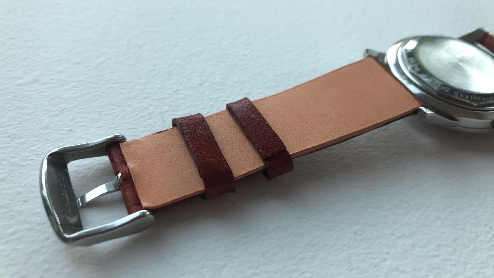

<!DOCTYPE html>
<html lang="en">
  <head>
    <meta charset="utf-8"> 
    <link rel="shortcut icon" href="/favicon.ico" type="image/x-icon">
    <link rel="icon" href="/favicon.ico" type="image/x-icon">
  </head>
</html>

<!--- Set Up Page --->
<head>
  <title>Homegrown Watch Straps</title>
  <!-- Set up the page to be responsive to size -->
  <meta name="viewport" content="width=device-width, initial-scale=1">
  <!-- Latest compiled and minified bootstrap CSS -->
  <link rel="stylesheet" href="https://maxcdn.bootstrapcdn.com/bootstrap/4.3.1/css/bootstrap.min.css">
  <!-- jQuery library -->
  <script src="https://ajax.googleapis.com/ajax/libs/jquery/3.3.1/jquery.min.js"></script>
  <!-- Popper JS -->
  <script src="https://cdnjs.cloudflare.com/ajax/libs/popper.js/1.14.7/umd/popper.min.js"></script>
  <!-- Latest compiled JavaScript -->
  <script src="https://maxcdn.bootstrapcdn.com/bootstrap/4.3.1/js/bootstrap.min.js"></script>
  <style>
  .fakeimg {
    height: 200px;
    background: #aaa;
  }
  </style>
</head>
<body>

<!-- Navbar -->
<nav class="navbar navbar-expand-sm bg-dark navbar-dark fixed-top narbar-static-top">

	<!-- Logo -->
	<a class="navbar-brand" href="#">
		
    Homegrown Straps
	</a>
   
	<!-- Toggler/collapsibe Button -->
	<button class="navbar-toggler" type="button" data-toggle="collapse" data-target="#collapsibleNavbar">
		<span class="navbar-toggler-icon"></span>
	</button>

	<!-- Links -->
	<div class="collapse navbar-collapse justify-content-end" id="collapsibleNavbar">
		<ul class="navbar-nav text-right">
			<li class="nav-item active">
			  <a class="nav-link" href="#">Home</a>
			</li>
			<li class="nav-item">
			  <a class="nav-link" href="about.html">About Us</a>
			</li>
      <li class="nav-item">
        <a class="nav-link" href="straps.html">Our Watch Straps</a>
      </li>
			<li class="nav-item">
			  <a class="nav-link" href="enquiry.html">Make an Enquiry</a>
			</li>
		</ul>
	</div> 

</nav>

<!-- Hero Images -->
<div id="hero" class="carousel slide" data-ride="carousel" style="padding-top: 55px">

  <!-- Indicators -->
  <ul class="carousel-indicators">
    <li data-target="#hero" data-slide-to="0" class="active"></li>
    <li data-target="#hero" data-slide-to="1"></li>
    <li data-target="#hero" data-slide-to="2"></li>
  </ul>

  <!-- The slideshow -->
  <div class="carousel-inner" style="height: 750px">
    <div class="carousel-item active">
      
    </div>
    <div class="carousel-item">
      
    </div>
    <div class="carousel-item">
      
    </div>
  </div>
</div>

<!-- Introduction -->
<div class="container h-130">
	<div class="row mb-4 pt-4 align-items-center h-100">
		<div class="col-sm-2"></div>
		<div class="col-sm-8 text-center">
			<p>Homegrown Watch Straps are makers of bespoke leather watch straps.</p>
			<p>We produce our straps by hand and allow you to customise all elements to achieve the perfect look.</p>
		</div>
		<div class="col-sm-2"></div>
	</div>
</div>

<!-- Footer -->
<footer class="page-footer font-small bg-dark text-light">
  <div class="footer-copyright text-center py-3">© Homegrown Watch Straps, Melbourne, Australia.
    <a href="mailto:contact@homegrownstraps.com"> Contact Us</a>
  </div>
</footer>

</body>
</html>
